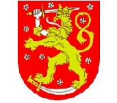

- 英国国旗
- 英国国徽
- 英国标志性建筑
- 英国地理位置
英国概况
英国本土位于大不列颠群岛, 被北海、英吉利海峡、凯尔特海、爱尔兰海和大西洋包围。
人口概况
62,770,000(2013年预估), 人口密度246人/平方公里(世界国家和地区第6名)。男女比例为0.98:1。
英国经济
英国是世界经济强国之一, 其2010年国内生产总值位居世界第5。英国制造业在国民经济中的比重有所下降；服务业和能源所占的比重不断增大, 其中商业金融业和保险业发展较快。旅游业是英最重要的经济部门之一。年产值700多亿英镑, 旅游收入占世界旅游收入的5%左右。与以风光旅游为主的国家不同, 英国的王室文化和博物馆文化是旅游业的最大看点。主要旅游点有伦敦、爱丁堡、加的夫、布赖顿格林威治、斯特拉福、牛津、剑桥等。英国是世界第四大贸易国, 贸易额占世界贸易总额的5%以上, 商品和劳务出口约占国内生产总值的25%。
外交关系
英国为联合国安全理事会常任理事国, 是世界五个核大国之一, 是欧盟、北约、英联邦、西欧联盟等120个国际组织的重要成员国。主张同美国加强关系, 重视发展与其他大国的关系, 努力改善同中国、俄罗斯、印度、日本等大国的关系。努力维系同英联邦国家的传统联系, 保持和扩大在发展中国家的影响。积极参与全球事务, 保持强大的国防力量、强调自由贸易。加强在环境保护、人权、可持续发展等问题上的国际合作。将人权问题作为其外交政策的核心。
经贸往来
2011-2012年间到英国投资的国家中，中国由前一年的排名第7位跃升至第3位，投资增幅高达55%。中国商务部数据显示，在不到一年半的时间里（2011年到2012年6月），中国对英投资总额约68.8亿美元，是过去几十年对英投资总额的近5倍。
在未来的一段时间内，中国对英的投资仍将持续高速增长。为了积极支持这一趋势的增长，英国政府专门设立了英国贸易投资总署在中国各地的办事处。英国贸易投资总署（UKTrade&Investment,UKTI）是英国政府设立专门为从事贸易的英国公司和在英投资的外国公司提供全方位服务的机构，英国贸易投资总署前身为英国国际贸易总署（BritishTradeInternational，BTI），2003年10月更改成现名。
英基础设施完善，政府配套服务措施到位，鼓励自由贸易，重视引进新技术、新产品和新的管理方法，以增加出口，提高就业。英与世界80多个国家和地区有贸易关系，主要贸易对象是欧盟、美国和日本。服务贸易自1966年以来一直顺差，2008年顺差为836亿美元。主要进口产品有：食品、燃料、原材料、服装、鞋业、电子机械设备、汽车等。主要出口产品有：石油及相关产品、化工产品（包括医药制品）、烟草、饮料、机械设备等。欧盟是英国最大的贸易伙伴。